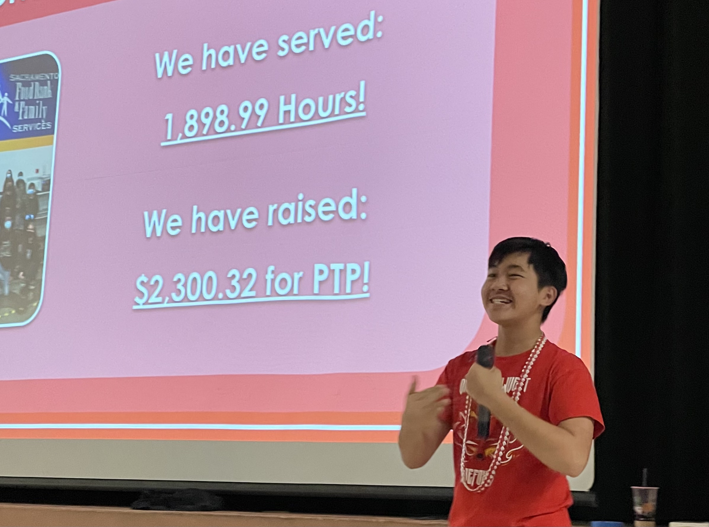

ABOUT ME
Hello! My name is Anthony Tom and I am from Roseville, California. I am a motivated and diligent student at Woodcreek High School with a strong interest in the fields of applied mathematics, economics, and computer science.
Fun Facts
- I created the Butter Guinea Pig Instagram Filter using Meta Spark AR (Over 473K opens and 158K impressions).
- I have explored 8 countries (United States, China, Canada, Italy, Vatican City, Austria, Germany, Czech Republic). I have also visited the airports of 2 additional countries (South Korea, United Kingdom).
Favorites
Song: Nocturne Opus 9 No. 2 by Frédéric Chopin (Source)